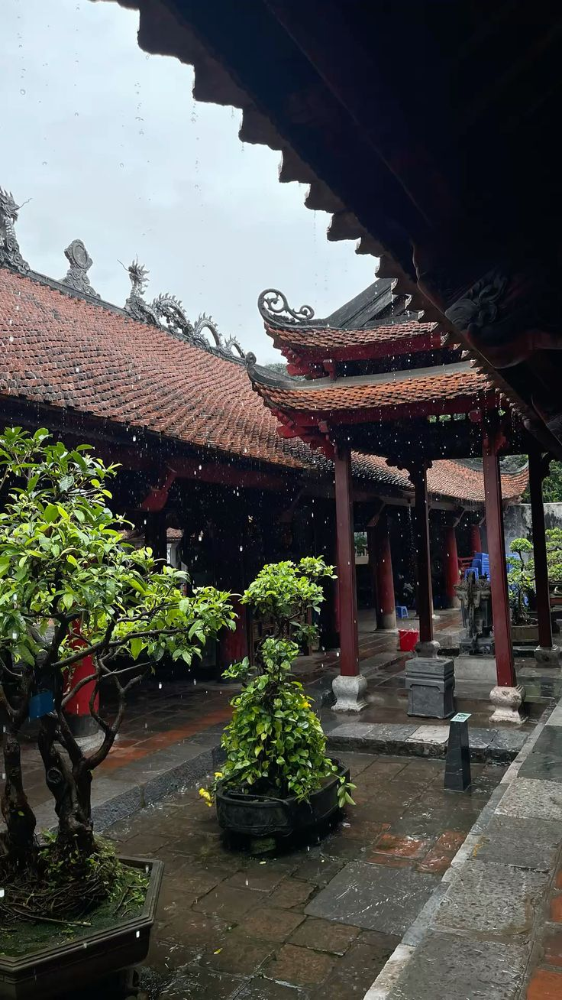
_sweetmango / Pinterest
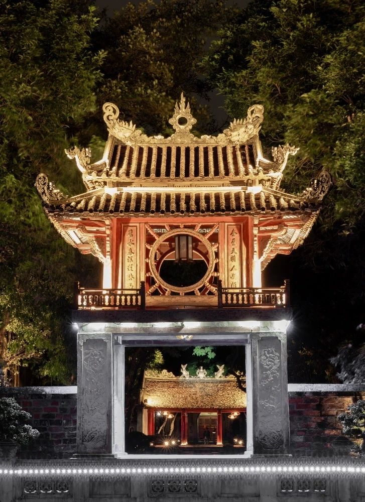
Báo Pháp Luật TP.Hồ Chí Minh / Pinterest
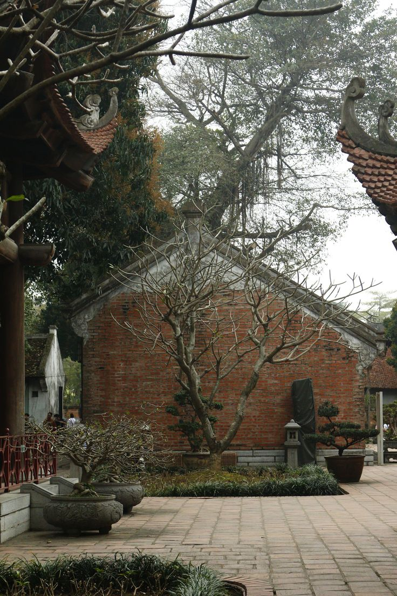
Chiêu Duyên / Pinterest
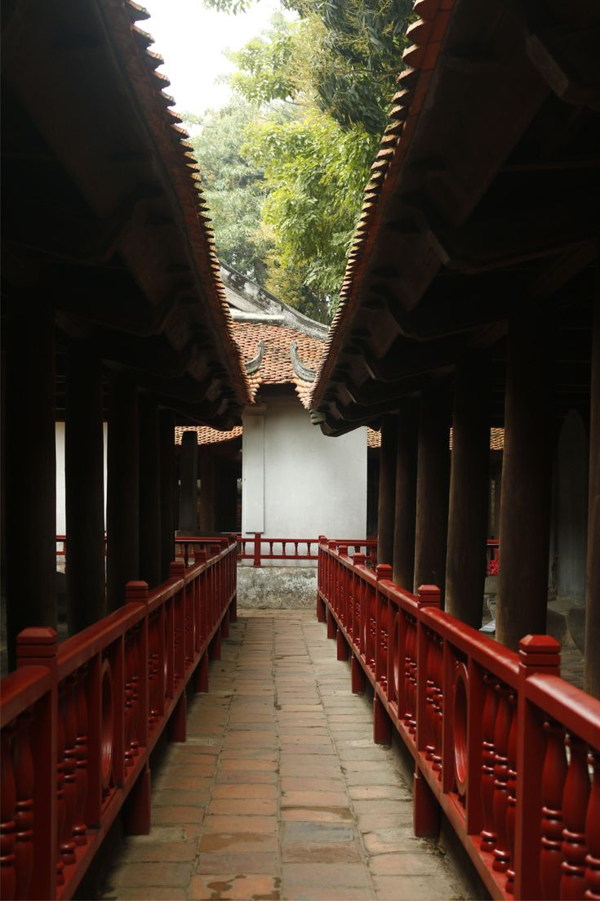
Chiêu Duyên / Pinterest
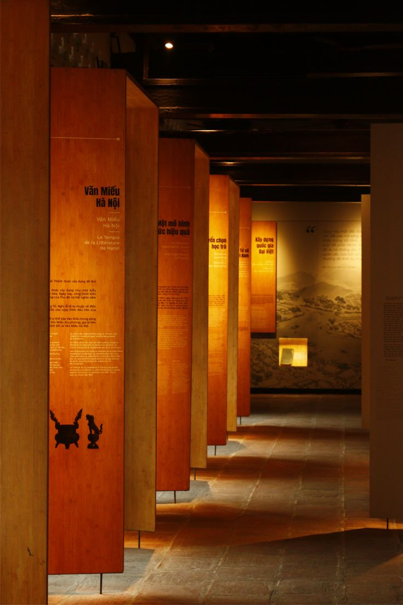
Chiêu Duyên / Pinterest
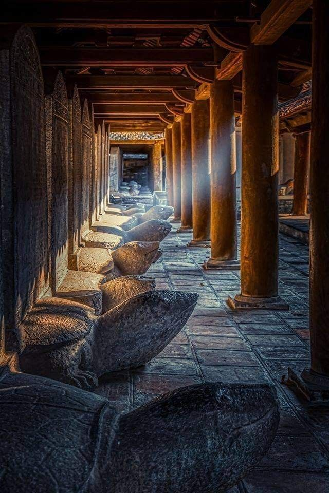
Đồng Hiểu Nhã Văn / Pinterest
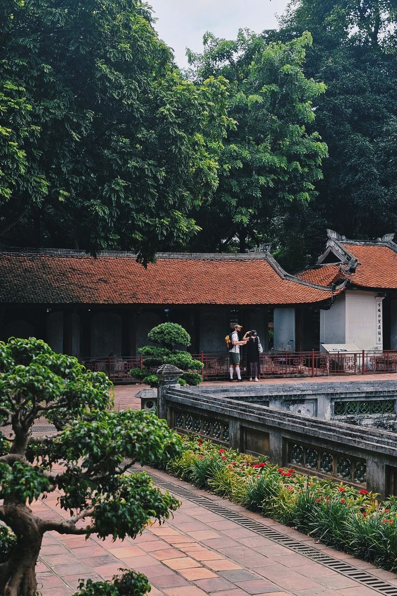
Dương đào thanh dâu / Pinterest
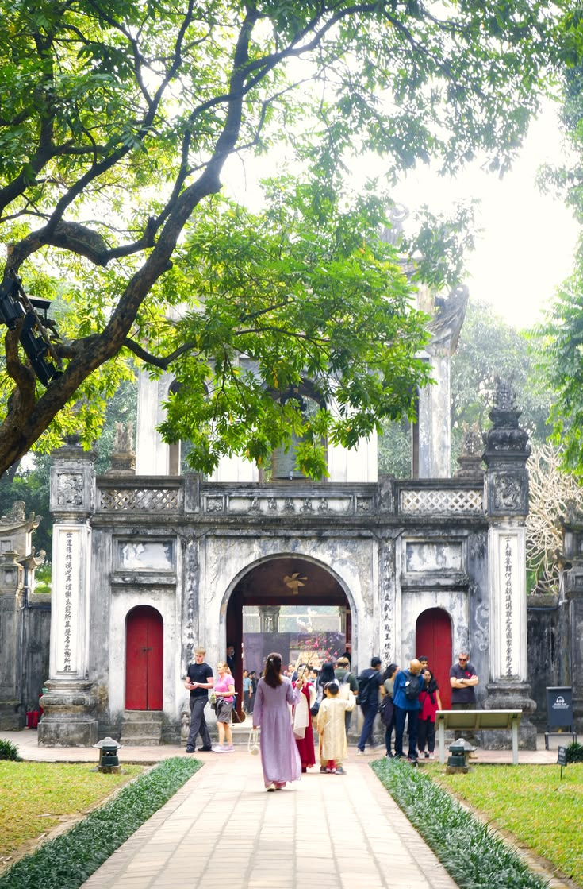
Lý Nguyễn Uyên / Pinterest
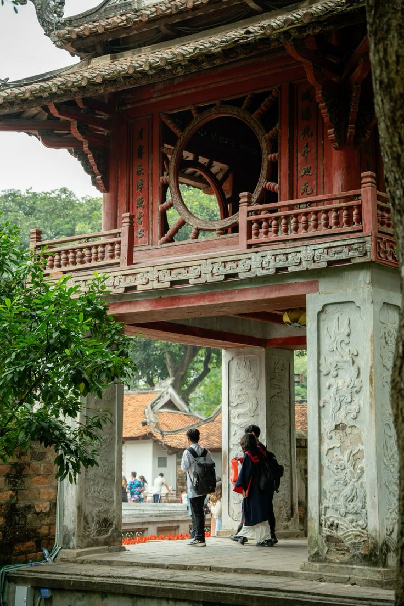
Liz Marie / Pinterest
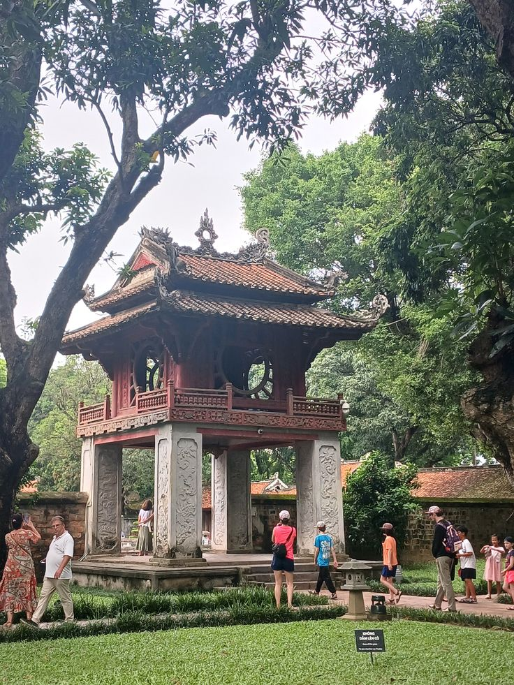
May / Pinterest
Quang Sơn / Pinterest
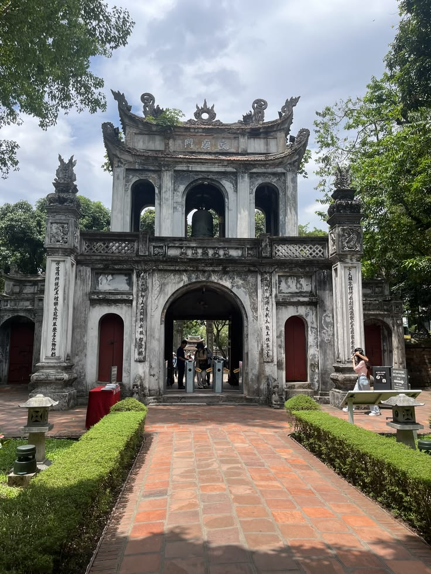
Rudrakshi / Pinterest